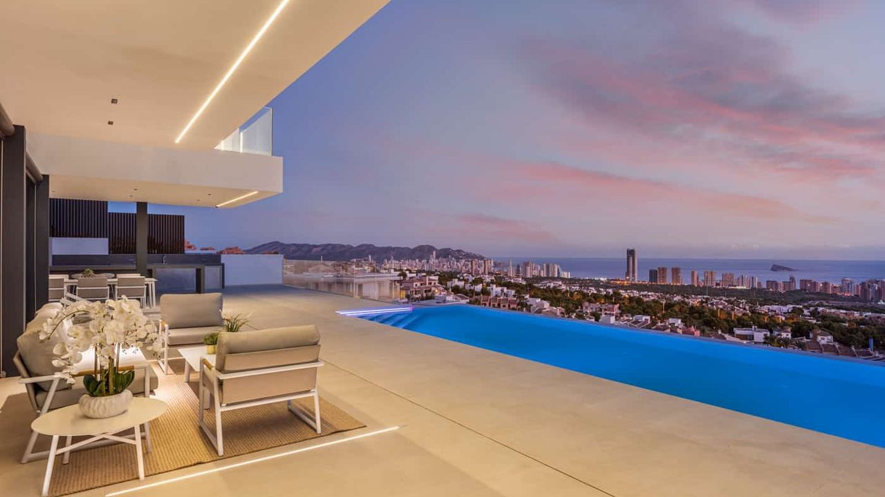
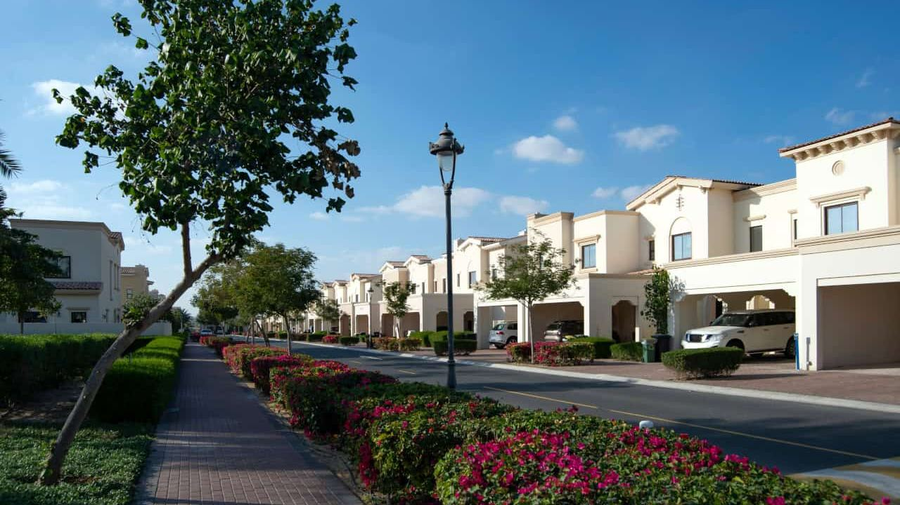
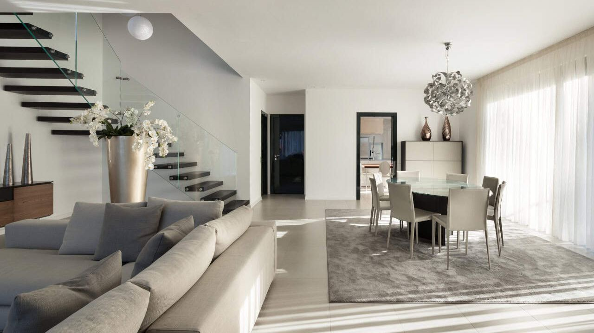
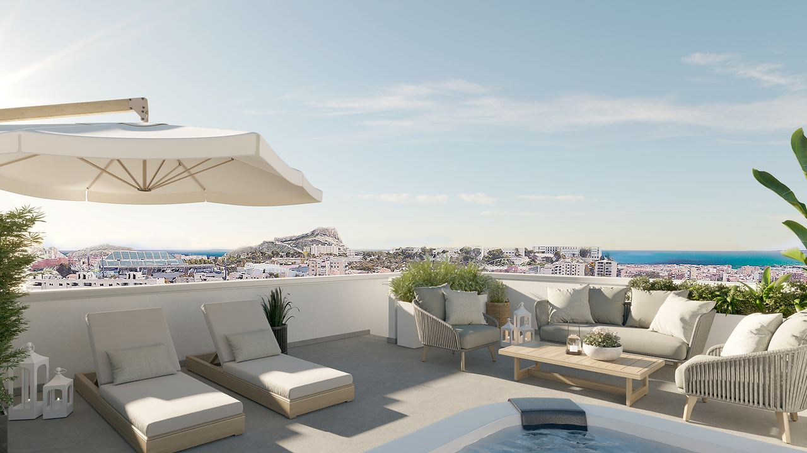

Comprar en España · Guía
Cómo comprar un piso o una casa en España – Paso a paso
 Por Anita Orłowska · · actualizado · 3 min de lectura
Por Anita Orłowska · · actualizado · 3 min de lectura

En resumen: Comprar una vivienda de segunda mano suele llevar de 6 a 10 semanas: reserva, revisión del abogado, contrato de arras (normalmente un 10 %) y firma ante notario. Calcule en torno a un 11–13 % adicional de impuestos y gastos. En la compra de obra nueva sobre plano, la ley obliga a garantizar cada pago a cuenta con aval bancario o seguro. Los compradores extranjeros necesitan además el NIE.
Comprar vivienda en España es sencillo si se conocen los pasos: reserva, arras, notaría y Registro. Esta guía recorre cada uno y los costes, tanto si compra desde España como desde el extranjero.
Paso 1: Prepararse

- Fije el presupuesto, incluyendo un 11–13 % de impuestos y gastos.
- Si es extranjero, obtenga el NIE, necesario para comprar, pagar impuestos y contratar suministros. Se pide en un consulado español, en España o mediante un abogado con poder.
- Abra una cuenta en un banco español si aún no la tiene.
- Si necesita hipoteca, pida una preaprobación antes de visitar viviendas. Los bancos financian a residentes hasta el 80 % y a no residentes en torno al 60–70 %.
- Elija un abogado independiente, que trabaje para usted y no para el vendedor o el promotor.
Paso 2: Reserva y contrato de arras

Cuando encuentra la vivienda, suele pagarse una señal de reserva (a menudo 3.000–10.000 €) para retirarla del mercado mientras el abogado revisa la nota simple, deudas, licencias, IBI y comunidad.
Después se firma el contrato de arras, con una señal de en torno al 10 % del precio, que fija el precio y la fecha de la escritura. Lo más habitual son las arras penitenciales: si el comprador desiste, pierde la señal; si desiste el vendedor, devuelve el doble.
En obra nueva sobre plano se firma un contrato de compraventa con el promotor y se paga por fases. La ley exige que cada cantidad entregada a cuenta esté garantizada con aval bancario o seguro, para recuperar el dinero si la obra no se termina. Pida el aval en cada pago.
Paso 3: Firma ante notario
La propiedad se transmite al firmar la escritura pública de compraventa ante notario. En ese momento se paga el resto del precio, por transferencia o cheque bancario, y se entregan las llaves. El notario comprueba identidades y Registro, lee la escritura y deja constancia de los medios de pago.
Necesitará su DNI o pasaporte, el NIE si es extranjero, los justificantes de los pagos y, si hay hipoteca, la presencia del banco en la misma firma.
¿No puede desplazarse? Puede otorgar un poder notarial a un abogado: en un consulado español o ante un notario extranjero con apostilla.
Paso 4: Después de la firma
- El abogado o la gestoría de la notaría liquida el impuesto de la compra, normalmente en el plazo de un mes, e inscribe la escritura en el Registro.
- Cambie a su nombre agua, luz e internet.
- Domicilie el IBI y la comunidad.
- Contrate el seguro de hogar.
- Si no es residente, presente cada año el modelo 210 por la vivienda.
¿Cuánto cuesta comprar?

| Gasto | Segunda mano | Obra nueva |
|---|---|---|
| Impuesto principal | ITP: 9 % en la Comunitat Valenciana (11 % por encima de 1 millón), 7 % en Andalucía | IVA: 10 % |
| AJD | – | 1,4 % Comunitat Valenciana, 1,2 % Andalucía |
| Notaría y Registro | En torno al 0,5–1 %, según aranceles oficiales | |
| Abogado | Normalmente alrededor del 1 % más IVA | |
| Hipoteca (si la hay) | Tasación y gastos bancarios; el AJD de la hipoteca lo paga el banco | |
Ejemplo: un piso de obra nueva en la provincia de Alicante por 300.000 € supone unos 30.000 € de IVA + 4.200 € de AJD + unos 6.000 € de notaría, Registro y abogado: alrededor de 340.000 € en total.
Errores habituales
- Pagar una señal antes de que un abogado revise la vivienda.
- Usar el abogado del vendedor o del promotor en lugar de uno propio.
- No pedir el aval de las cantidades entregadas sobre plano.
- Olvidar que ampliaciones, piscinas o terrazas pueden no tener licencia.
- No calcular los impuestos, los gastos y los costes anuales.
- Dar por hecho que se puede alquilar a turistas sin revisar la licencia.
Preguntas frecuentes
¿Pueden los extranjeros comprar vivienda en España?
Sí, sin restricciones, sean de la UE o no. Necesitan el NIE y, en la práctica, una cuenta en un banco español.
¿Cuánto suman los gastos de compra?
En torno al 11–13 % del precio: 10 % de IVA más 1,2–1,4 % de AJD en obra nueva, o un ITP del 7–11 % en segunda mano, más un 1,5–2 % de notaría, Registro y abogado.
¿Cuánto tarda la compra de una vivienda?
De 6 a 10 semanas en segunda mano al contado, algo más con hipoteca. La obra nueva sobre plano se escritura al terminar la obra.
¿Se puede comprar sin viajar a España?
Sí, con un poder notarial a favor de un abogado, otorgado en un consulado español o ante notario extranjero con apostilla.
Le acompañamos en cada paso
Con las personas adecuadas, comprar en España es sencillo. Le ayudamos a encontrar la vivienda, trabajamos con su abogado independiente y le acompañamos hasta que tenga las llaves en la mano. Cuéntenos qué busca y le enviaremos una primera selección.